図解：アーツ・アンド・クラフツ運動
アーツ・アンド・クラフツ運動の成立
- 19世紀
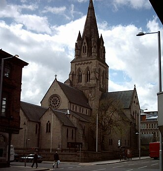
ラスキンの中世礼賛合理主義に反発
ゴシックを称賛 - 1859〜60
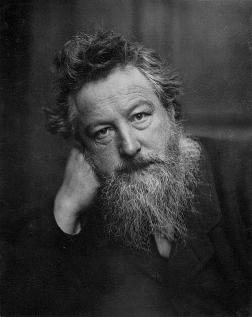
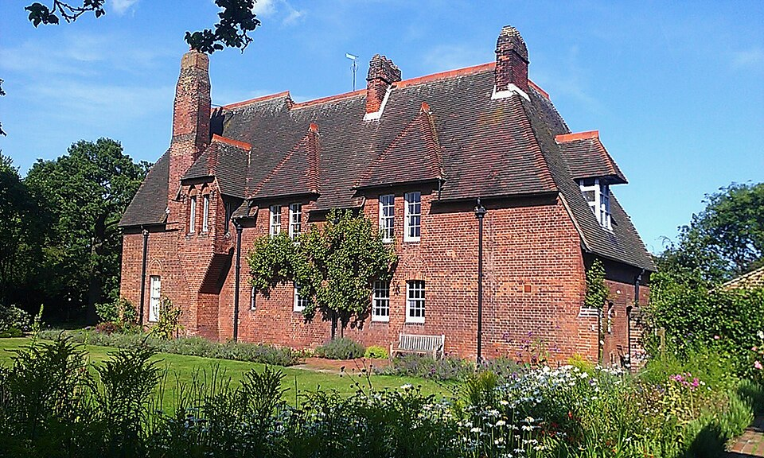
モリスの自邸ウェッブが設計
内装も手作り - 1861

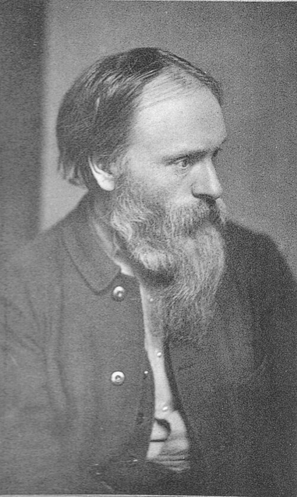
仲間と商会設立ロセッティら7人
伝統の椅子も - 1875
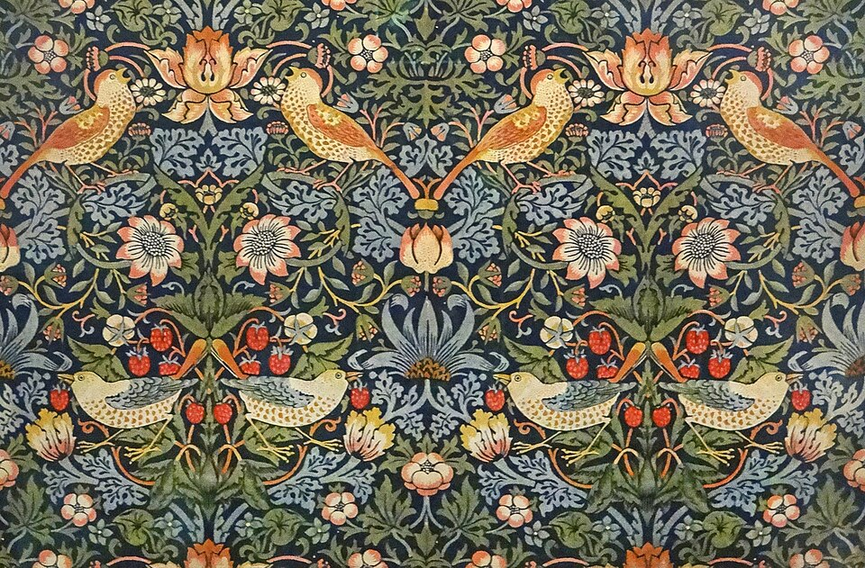
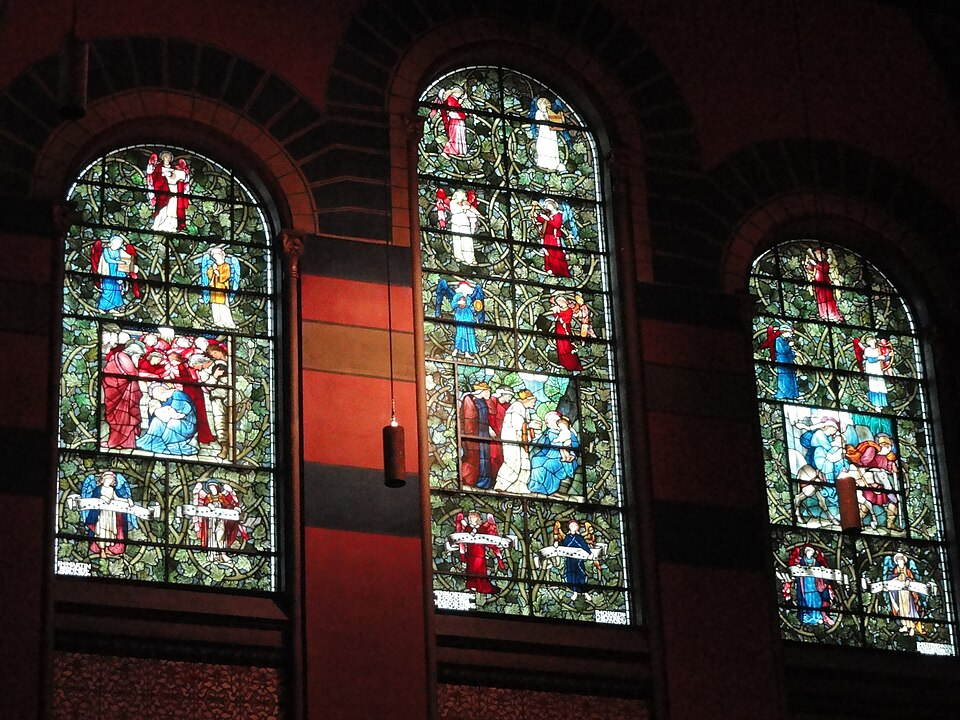
モリス商会へ自然の模様
古建築を保護 - 1890年代
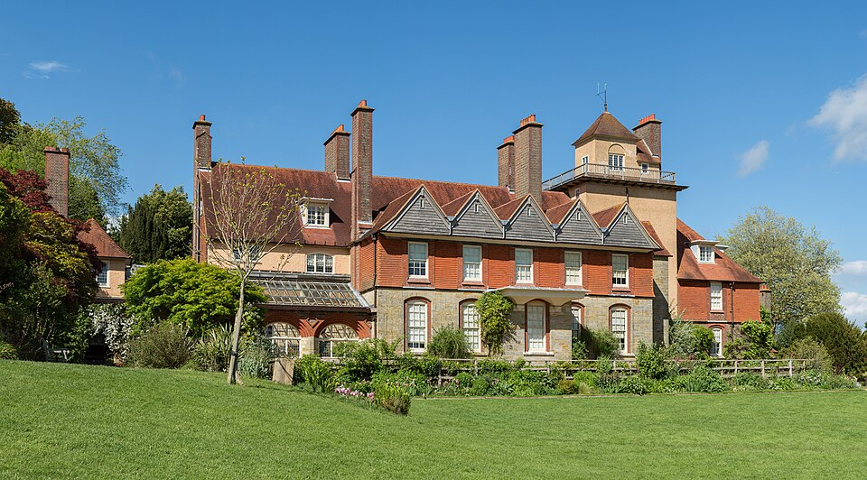
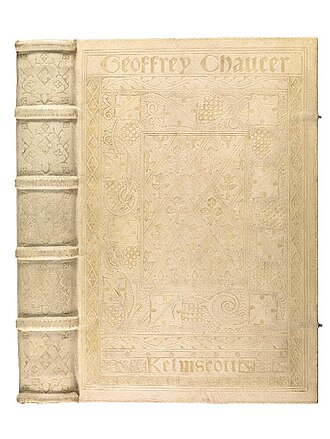
理想と価格の矛盾手作りは高価
富裕層向けに
機械生産と何が違うか
できる限り土地の素材装飾様式の表面を混ぜる草や鳥の模様
庭の景色から着想品質機能・品質の乏しい品機能のよい品
使ううちに愛着価格安く手に入る高価になりがち
富裕層の需要を満たす
図版の出典
- 《ノッティンガム大聖堂（聖バルナバ大聖堂）》オーガスタス・ウェルビー・ノースモア・ピュージン：出典（CC BY-SA 3.0）
- ウィリアム・モリスの写真、フレデリック・ホリヤー撮影、1887年：出典（Public domain）
- 《レッド・ハウス》フィリップ・ウェッブ（ウィリアム・モリスの協力）：出典（CC BY-SA 3.0）
- 《自画像》ダンテ・ゲイブリエル・ロセッティ、1847年、ナショナル・ポートレート・ギャラリー（ロンドン）：出典（Public domain）
- エドワード・バーン＝ジョーンズの写真、フレデリック・ホリヤー撮影、1882年頃：出典（Public domain）
- 《いちご泥棒》ウィリアム・モリス（デザイン）、モリス商会（製造）：出典（CC BY 2.0）
- 《降誕の窓》エドワード・バーン＝ジョーンズ（意匠）、ウィリアム・モリス／モリス商会（制作）：出典（CC0 1.0）
- 《スタンデン・ハウス》フィリップ・ウェッブ：出典（CC BY-SA 3.0）
- 《ジェフリー・チョーサー著作集（ケルムスコット版の装丁）》ジェフリー・チョーサー（著）、ウィリアム・モリス（書物設計）、エドワード・バーン＝ジョーンズ（挿絵）、ダヴズ・バインダリー（装丁）：出典（CC BY 4.0）
重要人物
運動の中心
商会の仲間
- フィリップ・ウェッブ建築家レッド・ハウスやスタンデンを設計
- エドワード・バーン＝ジョーンズ画家大学で出会ったモリスの親友。商会の仲間
- ダンテ・ゲイブリエル・ロセッティ画家フランスの田舎の椅子を紹介。不調で仕事から外れる
- ピーター・ポール・マーシャル出資者商会設立の発案者。社名に名が入る
- チャールズ・ジョゼフ・フォークナー数学者商会の株主兼財務担当
思想と名前を与えた人
運動の成り立ち
芸術と工芸を結び直す運動
動画 1:49～19世紀、1860年頃のイギリスで始まったアーツ・アンド・クラフツ運動は、各国へ影響を及ぼすデザイン革命でした。アーツは芸術、クラフツは工芸を意味します。産業革命によって機械化と大量生産が進む中、機械化に反発し、手工業に価値を見いだそうとした運動です。名称は1887年にコブデン＝サンダーソンが付けたものですが、活動はそれ以前の1860年代から行われていました。
中心となったのは、ジョン・ラスキンの影響を受けたウィリアム・モリスです。ラスキンはラファエル前派へ影響を与えた美術評論家で、モリスはロセッティやバーン＝ジョーンズと第二世代を形成しました。ラファエル前派は、ラファエロを規範とする教育へ反発し、中世や初期ルネサンスの美術に価値を見いだしました。その活動は短期間でしたが、古い時代に新しい価値を見いだす姿勢は斬新でした。機械化の時代に手工業を選び直したアーツ・アンド・クラフツ運動も、その流れをくむものと考えられます。後のアール・ヌーヴォーやモダニズムの源泉となった運動です。
 画像を拡大 ＋
画像を拡大 ＋
《オフィーリア》
- 作者
- ジョン・エヴァレット・ミレイ
- 制作時期
- 1851～1852年
- 所在地・所蔵
- テート・ブリテン
- 素材・形式
- 油彩画
出典・画像について
産業革命と職人
産業革命が職人から奪ったもの
動画 3:25～18世紀から19世紀前半、イギリスは他国に先駆けて産業革命を進め、「世界の工場」と呼ばれました。蒸気機関で遠方へ移動しやすくなり、かつて高価だった製品も安く手に入るようになりました。しかし、物質的な豊かさの裏で、労働者は安い賃金と劣悪な環境で働かされました。ストレスを和らげようと砂糖入り紅茶が飲まれるようになり、その消費は18世紀後半頃から大きく増えていきます。これはイギリス・インド・中国の三角貿易へつながり、やがてアヘン戦争が起こりました。国は強くなっても、利益を享受したのは一部の資本家でした。
負担は肉体だけの問題ではありません。手で織物などを作っていた職人は、機械製品との価格競争に勝てず、生活のため工場労働者へ移りました。手でものを作る人が減り、同じ作業を繰り返す日々は、生きる喜びも失わせかねませんでした。この時代にはキルケゴールやニーチェに代表される実存主義の哲学者が現れ、集団としてではなく個人としてどう生きるかを模索します。その根底には、行き過ぎた合理主義社会への反発があったと考えられます。国という集団が発展する一方で、一人一人がないがしろにされていたのです。
機械生産の品々には、さまざまな様式の表面だけを借りて混ぜ合わせ、機能や品質の乏しい粗悪品もありました。工夫を担っていた職人の仕事が失われたことも、その背景にあります。ラスキンの著作から社会問題に関心を持ち、前派の影響も受けていたモリスは、社会問題と芸術を統合できないかと考えました。足掛かりが自邸レッド・ハウスです。外観だけでなく内装や家具も手作りとし、機械化の中で失われたものを取り戻そうとしました。
動画の房飾り布張り背の個体未確定。候補Henry Eyles磁器肖像背・房飾りなしは別作品で除外。
《1851年万国博覧会の展示椅子（個体未確定）》
- 作者
- 未確定
- 制作時期
- 1851年以前（動画表示）
- 所在地・所蔵
- 未確定
- 素材・形式
- 家具
出典・画像について
作品情報：作品・画像・利用条件
モリスとラスキンの思想
モリスとゴシックの精神
動画 6:09～1834年、裕福な家庭に生まれたモリスは、聖職者を目指してオックスフォード大学へ入学しました。そこで出会った親友がバーン＝ジョーンズです。ともに神学を学んでいましたが、やがて芸術家への道を選びます。その一因は、在学中に読んだラスキンの『ヴェネツィアの石』でした。その思想は後のモリスの芸術哲学に深く反映されます。
401秒New York表記の第1巻The Foundations、版年出版社収蔵未確定。London版・後年版で代用せず保留。
《ヴェネツィアの石（動画の版・個体未確定）》
- 作者
- ジョン・ラスキン
- 制作時期
- 1851～1853年（初刊）
- 所在地・所蔵
- 動画掲載個体の所蔵未確定
- 素材・形式
- 書籍
出典・画像について
作品情報：作品・画像・利用条件
ラスキンは中世、とりわけゴシック建築を称賛しました。イギリスでは1829年のカトリック解放法によりカトリック教徒への差別が撤廃され、権利が認められるとともに、ゴシック・リヴァイヴァルと呼ばれる建築復興運動が盛んになります。ピュージンなどの建築家も、この時代に登場しました。

《ノッティンガム大聖堂（聖バルナバ大聖堂）》
- 作者
- オーガスタス・ウェルビー・ノースモア・ピュージン
- 制作時期
- 1841～1844年
- 所在地・所蔵
- ノッティンガム、イングランド
- 素材・形式
- 建築
出典・画像について
合理主義への反発と中世の精神
動画 7:08～ラスキンのゴシック称賛には、合理主義への反発がありました。古典建築の左右対称、正確な円や三角形といった幾何学は、完全な建築を目指すものです。しかしラスキンは、その完全さが創造性を狭めると批判しました。絵画でも、正確な人体比率と構図を追い、ラファエロを規範にすると、既に完成した型を繰り返すことになりかねません。完璧なものを目指しながら反復によって価値が下がる、という合理性の罠です。

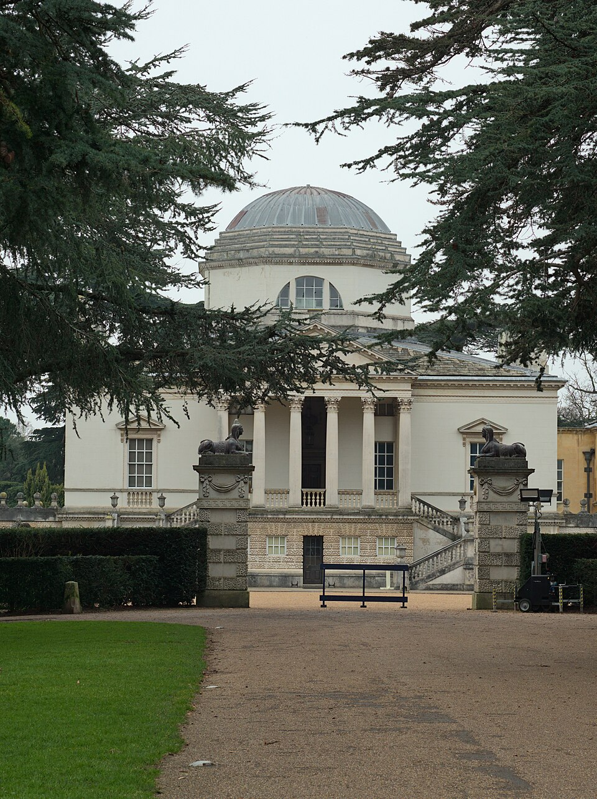
画像を拡大 ＋《チズウィック・ハウス》
- 作者
- 第3代バーリントン伯リチャード・ボイル
- 制作時期
- 1726～1729年
- 所在地・所蔵
- チズウィック、ロンドン
- 素材・形式
- 建築
出典・画像について
一方、ゴシック建築の左右非対称や高く伸びる尖塔は、合理性の観点では不要に見えても、創造性の余地を残します。中世の人々には、神のために素晴らしいものを作るという心情があり、ラスキンはその精神性に価値を見いだしました。
ラスキンは社会と芸術の関係も論じました。大量生産と大量消費の中で粗悪な品があふれると、人はものへの愛着を失い、心も腐敗する。手作りで丹精を込めた中世には、ものへの愛着とよい精神が育まれた、という考えです。深く共感したモリスは、よいものを作ろうと建築家を志しました。
もう一つの影響源は、ラスキンの主張を既に取り入れていたラファエル前派でした。1850年代半ばには初期の仲間は散り散りになっていましたが、バーン＝ジョーンズがロセッティに師事したことで、モリスも交流します。初期ルネサンスや中世の精神を絵画に復活させようとしたミレイらに対し、モリスは建物や身近な道具へ、その精神を取り戻そうとしました。そこから伝統を尊重する手工業の会社が生まれます。
モリス商会の仕事
モリス商会とレッド・ハウス
動画 9:29～1861年、モリス・マーシャル・フォークナー商会が設立されました。仲間はロセッティ、モリス、バーン＝ジョーンズ、フィリップ・ウェッブ、フォード・マドックス・ブラウン、ピーター・ポール・マーシャル、チャールズ・ジョゼフ・フォークナーの七人です。社名に入った三人は出資者で、マーシャルは設立の発案者、数学者フォークナーは株主兼財務担当でした。ロセッティは資金がなく、名が社名に残らなかったといいます。
特に重要なのが建築家フィリップ・ウェッブです。大学を出たモリスが一時所属した建築事務所の先輩で、運動の理念に沿った建物を設計しました。代表例のレッド・ハウスは、ゴシック・リヴァイヴァルを踏まえる中世風の建築ですが、単なる模倣ではありません。内装は19世紀の暮らしに合わせて機能的に作り、機械に頼らず、できる限り土地の素材を使って手作りする特徴がありました。

《レッド・ハウス》
- 作者
- フィリップ・ウェッブ（ウィリアム・モリスの協力）
- 制作時期
- 1859～1860年
- 所在地・所蔵
- ベクスリーヒース、ロンドン／ナショナル・トラスト
- 素材・形式
- 建築
出典・画像について

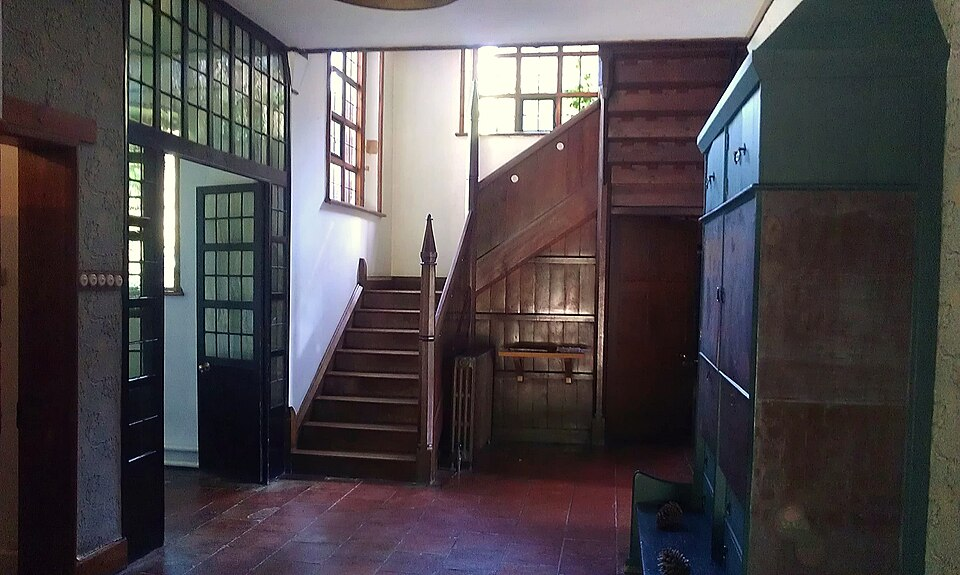
画像を拡大 ＋《レッド・ハウスの階段ホール》
- 作者
- フィリップ・ウェッブ、ウィリアム・モリス
- 制作時期
- 1859～1860年（建築）
- 所在地・所蔵
- レッド・ハウス、ベクスリーヒース、ロンドン
- 素材・形式
- 建築
出典・画像について
画像出典：Ethan Doyle White
CC BY-SA 3.0
作品情報：作品・画像・利用条件
建築中に内装に合う家具がないと分かり、仲間は自分たちで作ることにしました。それが建築から家具まで一体で担当する会社の設立へつながります。家具でもデザイン、制作、彩色を分担し、それぞれの得意分野を生かしました。
663秒三扉五場面絵・暗箱赤脚はV&A O8144と一致。掲載写真の条件未確認、作者年は動画と相違。V&A本文制限、家具史協会bifmoの収蔵資料転載で確認。
《セント・ジョージ・キャビネット》
- 作者
- フィリップ・ウェッブ（設計）、ウィリアム・モリス（彩色）と収蔵資料に記載
- 制作時期
- 1861～1862年（収蔵資料）
- 所在地・所蔵
- ヴィクトリア・アンド・アルバート博物館
- 素材・形式
- 家具
出典・画像について
作品情報：作品・画像・利用条件
作品情報の相違：キャビネットの分担
元解説はモリスが意匠、ウェッブが制作、バーン＝ジョーンズが彩色と説明しています。一方、V&A収蔵資料の転載では、ウェッブ設計・モリス彩色、1861～1862年とされています。本文では共同制作の趣旨を残し、個別の分担の断定を避けました。
確認資料：V&A収蔵記録 · 家具史協会：収蔵資料転載
伝統的な椅子と自然の模様
動画 11:10～商会は新しい家具だけを作ったのではありません。各地で使われてきた伝統的な家具も再発見しました。ロセッティ・アームチェアは、ロセッティがフランスの田舎の椅子を仲間に紹介したことに由来します。使いやすさと耐久性を備える伝統的な形には、無駄な変更をせず、できる限りそのまま制作しました。

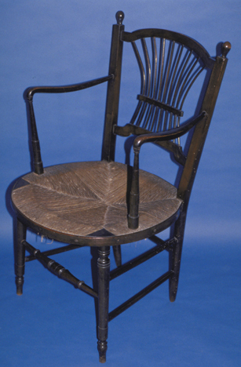
画像を拡大 ＋《ロセッティ・アームチェア》
- 作者
- モリス・マーシャル・フォークナー商会（製造）、設計のロセッティ帰属は未確定
- 制作時期
- 1863年頃（画面表記）
- 所在地・所蔵
- 動画個体の所蔵未確定
- 素材・形式
- 家具
出典・画像について
モリス商会のサセックス・シリーズの「ロセッティ」チェアの同型作例。
画像出典：Morris & Co. / Wikimedia Commons
CC BY 4.0
作品情報：画像出典・利用条件 · 作品・画像・利用条件
制作メモ
扇状の背・藁座の型は動画682秒の椅子と一致するが、同じ個体ではない。
代表例が、イギリス南部サセックス地方の椅子に由来するサセックス・アームチェアです。機能に優れ、モリス自身も愛用しました。家具には外観だけでなく、繰り返し使いたくなる機能が大切で、そこから愛着が生まれます。過剰な装飾は見栄えがしても、使いにくければ愛着にはつながりません。この頃から機能を兼ね備える家具が作られるようになります。

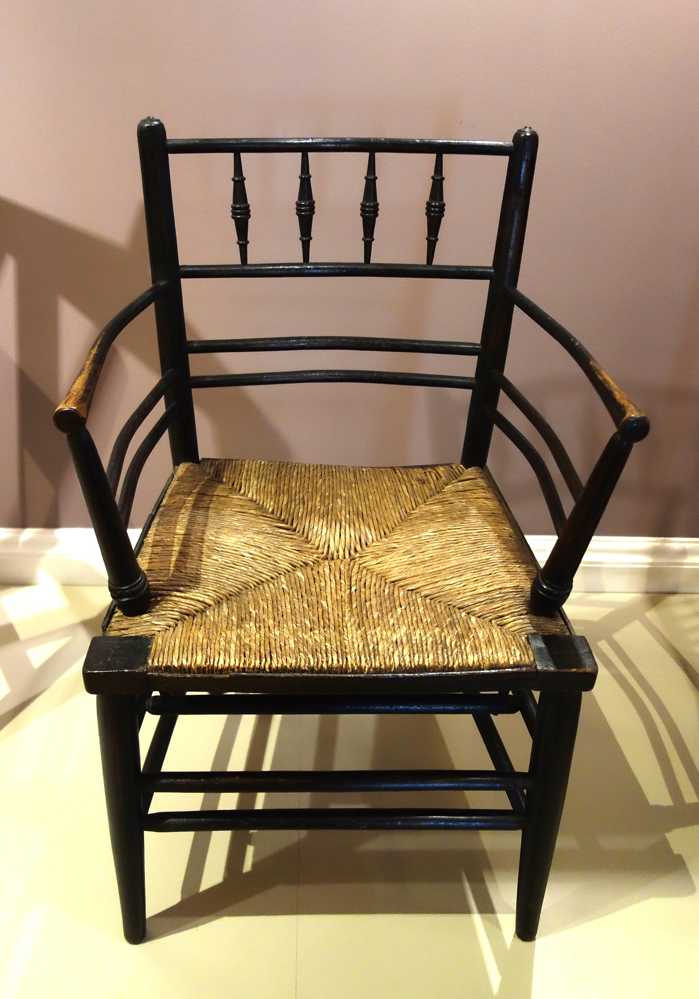
画像を拡大 ＋《サセックス・アームチェア》
- 作者
- モリス商会
- 制作時期
- 1870年頃（動画表示、個体外部未確認）
- 所在地・所蔵
- 動画個体の所蔵未確定
- 素材・形式
- 家具
出典・画像について
モリス商会製サセックス・アームチェアの同型作例（ハンティントン美術館）。
画像出典：Daderot / Wikimedia Commons
Public domain
作品情報：画像出典・利用条件 · 作品・画像・利用条件
制作メモ
背上部の紡錘4本・2本の横桟・藁座の型は動画706秒の椅子と一致するが、同じ個体ではない。
黒紡錘脚・緑草花張地・背景キャビネットの個体不明。Roycroft1903、Stickley等は別作品で除外し保留。
《モリス・チェア（リクライニング椅子）》
- 作者
- 個体の作者・製造者未確定
- 制作時期
- 1870年頃（動画表示）
- 所在地・所蔵
- 動画個体の所蔵未確定
- 素材・形式
- 家具
出典・画像について
作品情報：作品・画像・利用条件
草や鳥の装飾は、モリスのデザインの特徴です。庭などで見た景色から着想を得て、模様に取り入れました。そこには、自然に従うというラスキンの教えも反映されていると考えられます。代表例《いちご泥棒》は、自宅の庭のイチゴを鳥がついばむ様子から生まれ、今も親しまれる模様となりました。

《いちご泥棒》
- 作者
- ウィリアム・モリス（デザイン）、モリス商会（製造）
- 制作時期
- 1883年
- 所在地・所蔵
- ヴィクトリア・アンド・アルバート博物館（T.1-1978）
- 素材・形式
- 染織
出典・画像について
商会の再編と古建築の保護
動画 12:46～独自の仕事を続けた商会も、1875年に解散・再編されます。その大きな理由として挙げられるのが、ロセッティの心身の不調でした。ロセッティは妻エリザベス・シダルがいながら、モリスの妻ジェインに恋をしていました。シダルは大量の薬物摂取によって亡くなり、ロセッティは精神を病んで仕事を続けられなくなります。ただし、シダルの死の理由を恋愛関係だけに結び付けて断定することはできません。モリスはロセッティを仕事から外し、商会を自分の単独事業としてモリス商会へ再編しました。その後もウェッブやバーン＝ジョーンズと精力的に働きます。
重要な活動に、古建築保護協会の設立があります。当時の修復は建物の大部分を壊し、その時代の価値観に合わせて作り直すこともありました。モリスは元の姿を尊重しない再構成に反対し、当時の人々の価値観を尊重して保護するよう訴えました。商会はほかにも、中世の伝統に基づく手作りのステンドグラスや数々の壁紙を制作し、後のデザインへ影響を与えました。

《降誕の窓》
- 作者
- エドワード・バーン＝ジョーンズ（意匠）、ウィリアム・モリス／モリス商会（制作）
- 制作時期
- 1882年
- 所在地・所蔵
- トリニティ教会、ボストン
- 素材・形式
- ステンドグラス
出典・画像について
作品情報：作品・画像・利用条件

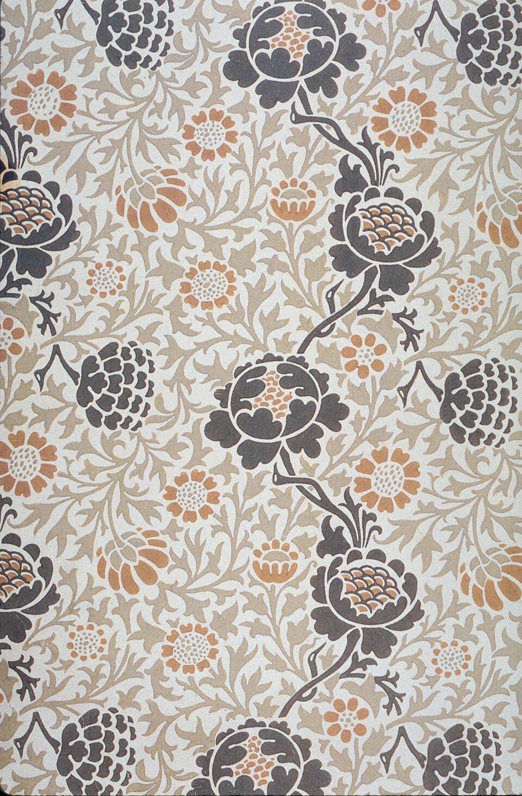
画像を拡大 ＋《グラフトン壁紙図案》
- 作者
- ウィリアム・モリス
- 制作時期
- 1883年頃
- 所在地・所蔵
- 画像資料の所蔵先記載なし
- 素材・形式
- 壁紙図案
出典・画像について
所蔵個体を示す写真ではなく、同図案の複製画像。所蔵先は資料に記載なし。
画像出典：William Morris / PKM（デジタル調整）
Public domain（PKM調整部分もPD）
作品情報：作品・画像・利用条件
制作メモ
画像の加工：既存デジタル調整・追加加工なし
理想と矛盾、その後
理想と価格の矛盾
動画 14:17～アーツ・アンド・クラフツ運動は商業的な成否とは別に、モリスの理想を十分に実現したとはいえません。根底には、機械による粗悪品ではなく、手作りで機能のよい品を人々へ届け、愛着を育てて社会をよくしようという願いがありました。しかし、儲けを優先しなくても、手間の掛かる品は高価にならざるを得ませんでした。
ウェッブが建築し、モリスが内装を手掛けたスタンデンも、裕福な弁護士一家のための邸宅でした。皆に良いものを届けるはずが、一部の富裕層の需要を満たすことになるという、大きな自己矛盾に陥ったのです。

《スタンデン・ハウス》
- 作者
- フィリップ・ウェッブ
- 制作時期
- 1892～1894年（設計1891年）
- 所在地・所蔵
- イースト・グリンステッド、ウェスト・サセックス／ナショナル・トラスト
- 素材・形式
- 建築
出典・画像について
作品情報：作品・画像・利用条件
晩年には私設の印刷所を設け、『ジェフリー・チョーサー著作集』を制作しました。中世の写本を思わせる豪華な書物は、一般の人には手の届かない価格となり、よい品を広く届ける理想とは隔たっていました。

《ジェフリー・チョーサー著作集（ケルムスコット版の装丁）》
- 作者
- ジェフリー・チョーサー（著）、ウィリアム・モリス（書物設計）、エドワード・バーン＝ジョーンズ（挿絵）、ダヴズ・バインダリー（装丁）
- 制作時期
- 1896年刊行／1899年装丁
- 所在地・所蔵
- ボドリアン図書館、オックスフォード（Broxb.67.7）
- 素材・形式
- 書籍
出典・画像について
本文の印刷1896年と、白豚革の装丁1899年を区別。
画像出典：Bodleian Libraries, University of Oxford
CC BY 4.0
作品情報：作品・画像・利用条件
制作メモ
配信画像は低解像度です。
外部確認：印刷素材と装丁
ケルムスコット版には紙刷り425部と羊皮紙刷り13部があり、すべてが羊皮紙に印刷されたわけではありません。掲載本は1896年刊行、1899年に白い豚革で装丁されたボドリアン図書館所蔵本です。装丁の革と本文の印刷素材は別です。元解説の「当時の主流は羊皮紙」「一冊二百匹の子羊」という説明は全版共通の確認済み事実として採用せず、子羊の数も保留しました。
手仕事の精神を次へ
動画 15:33～モリスの自己矛盾の背景には、機械生産を徹底して拒み、手作業にこだわり過ぎたことがあったと考えられます。そこで、機械も利用してよいものを作るという方向へ、世の中は進んでいきました。それでも、この運動は機械化の中で失われかけたクラフツマンシップの再興に貢献しました。モリスが理想へ突き進んだ試みを源泉に、より時代に合うデザイン革命としてアール・ヌーヴォーが展開していきます。
要点まとめ
- アーツ・アンド・クラフツ運動は1860年頃のイギリスで始まった、機械化と大量生産に反発し手工業に価値を見いだすデザイン革命。アーツは芸術、クラフツは工芸を意味し、名称は1887年にコブデン＝サンダーソンが付けた。アール・ヌーヴォーやモダニズムの源泉となった。
- 中心はラスキンの影響を受けたウィリアム・モリス。ラファエル前派の第二世代として、中世や初期ルネサンスの精神を建物や身近な道具に取り戻そうとした。
- 背景には、「世界の工場」と呼ばれたイギリスの産業革命で、労働者が劣悪な環境に置かれ、職人の仕事と生きる喜びが失われたことがある。
- ラスキンは『ヴェネツィアの石』などでゴシック建築の精神を称賛し、完璧さを求める合理主義は創造性を狭めると批判した。手作りのものには愛着とよい精神が育つと説いた。
- 1861年にモリス・マーシャル・フォークナー商会が七人で設立された。建築家フィリップ・ウェッブはモリスの自邸レッド・ハウスを設計し、建築から家具まで一体で手作りした。
- 商会はロセッティ・アームチェアやサセックス・アームチェアなど伝統的な家具を再発見し、機能を重んじた。モリスは自然から着想した模様を作り、《いちご泥棒》が代表例。
- 1875年、商会はモリスの単独事業のモリス商会に再編された。モリスは古建築保護協会を設立し、元の姿を壊す修復に反対した。
- 手間を掛けた品は高価になり、スタンデンの邸宅や『ジェフリー・チョーサー著作集』のように富裕層向けになるという矛盾を抱えた。それでもクラフツマンシップの再興に貢献し、アール・ヌーヴォーへつながった。
確認問題
答えを考えてから開いてください。選択問題は選ぶとすぐ正誤と解説が出ます（選択肢の順番は開くたびに変わります）。各問題のリンクから該当の章や作品カードへ戻れます。
選択問題：0／5問回答・正解0
A. 一問一答答えを考えてから開く
問1機械化に反発し手工業に価値を見いだした「アーツ・アンド・クラフツ運動」という名称を、1887年に付けた人物は誰か。
答えを見る
問2フィリップ・ウェッブが設計し、外観だけでなく内装や家具も手作りとした、モリスの自邸は何か。
答えを見る
問3建物の大部分を壊して作り直す当時の修復に反対し、元の姿を尊重して保護するよう訴えるため、モリスが設立した団体は何か。
答えを見る
B. 4択選ぶとすぐ正誤と解説
問41829年のカトリック解放法の後にイギリスで盛んになり、ピュージンらが活躍した建築復興運動はどれか。
→ 本文で確認（モリスとゴシックの精神）
問51861年設立のモリス・マーシャル・フォークナー商会の社名に、ロセッティの名が残らなかった理由とされるのはどれか。
→ 本文で確認（モリス商会とレッド・ハウス）
問6アーツ・アンド・クラフツ運動が陥った自己矛盾として正しいものはどれか。
→ 本文で確認（理想と価格の矛盾）
C. 図版問題画像を見て答える
問7この模様の名前とデザインした人物を答えよ。
答えを見る
問8この建物の名前はどれか。
→ 作品カードで確認
問9晩年のモリスが私設の印刷所で制作したこの書物はどれか。
→ 作品カードで確認